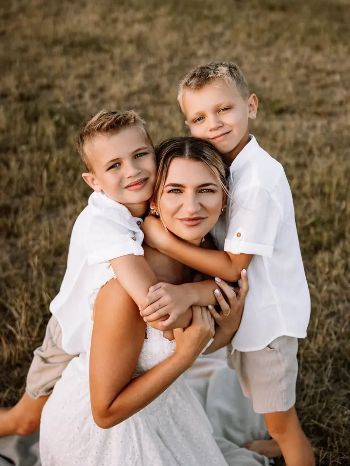
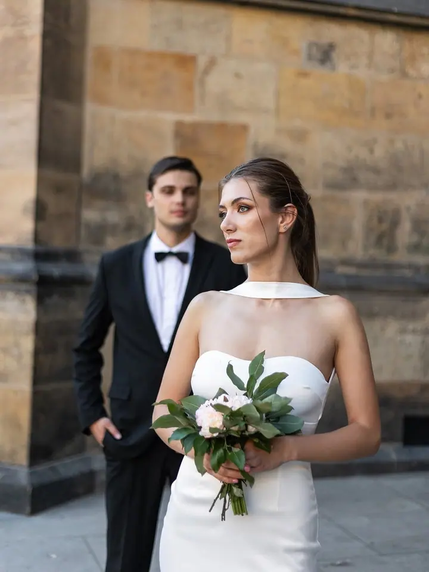
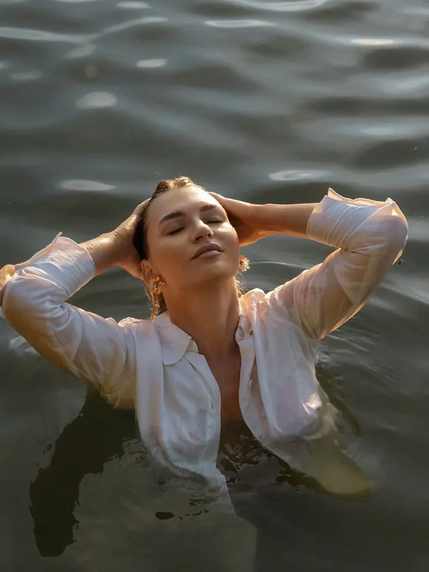

jedna
Rodinné focení
Fotím rodiny s dětmi venku v přírodě, v klidu a bez spěchu. Snažím se, aby focení bylo příjemné a uvolněné a vy jste mohli být sami sebou.

Rodinná, párová a svatební fotografka · Kladno, Praha, po celé ČR

Jmenuji se Lucie Pušková a fotím rodiny, páry i svatby na Kladně, v Praze a kdekoliv po republice. Naplno se focení věnuji od narození dcery, kdy jsem si uvědomila, jak rychle čas utíká.
Více o mně
Co fotím
jedna
Fotím rodiny s dětmi venku v přírodě, v klidu a bez spěchu. Snažím se, aby focení bylo příjemné a uvolněné a vy jste mohli být sami sebou.
dvě
Krátké nebo delší focení pro dva, kdy můžete být hlavně spolu. Ráda vám pomůžu vybrat místo, čas i oblečení.
tři
Ráda budu součástí vašeho svatebního dne. Před svatbou se vždycky osobně sejdeme a všechno spolu probereme.
Portréty pro jednotlivce i těhotenské fotografie, venku nebo ve městě. Klasický balíček je pro ně jako stvořený.
Zastavme spolu čas, aspoň na chvíli.
Za objektivem
Focení je moje vášeň už víc než deset let. Naplno jsem se mu ale začala věnovat až po narození dcery. Díky mateřství jsem si uvědomila, jak rychle čas utíká a jak moc pro mě znamenají chvíle, které se už nedají vrátit.
Právě proto fotím. Chci pomáhat i ostatním uchovat si vzpomínky. Fotím rodiny, těhotné ženy, děti, páry, portréty i svatby, nejčastěji na Kladně a v Praze, ale ráda přijedu kamkoliv po republice.
Při focení se snažím vytvořit příjemnou a uvolněnou atmosféru, abyste se cítili dobře a mohli být sami sebou. A to platí i pro ty, kdo se před objektivem zrovna necítí jako ryba ve vodě. Těším se, až vás poznám.
Lucie
Napište mi e-mailem nebo přes Instagram a vyberte si balíček. Termín je váš hned po zaplacení.
Pomůžu vám vybrat místo, čas, styl focení i oblečení. Pokud chcete, sejdeme se předem osobně, před svatbou je to samozřejmost.
Fotíme v klidu a bez stresu. Mým cílem je, abyste se cítili pohodlně a mohli být sami sebou.
Náhledy posílám do 24 hodin, upravené fotky obvykle do 7 dnů, nejpozději do 14 dnů. Svatební fotky dodávám do 5 týdnů.
Portfolio
Otázky
Mini balíček (30 minut, 10 upravených fotek) stojí 1 000 Kč, klasický (60 minut, 20 fotek) 1 800 Kč a premium (90 minut, 30 fotek) 2 500 Kč. Svatební ceník vám ráda pošlu na vyžádání.
Určitě ano. Poradím s výběrem místa, času i stylu a pomůžu vám vybrat oblečení. Kdykoliv si s něčím nebudete vědět rady, stačí mi napsat.
Dejte mi vědět co nejdříve a termín klidně přesuneme, třeba i desetkrát. Pokud na focení nakonec nepřijdete, peníze vracím formou poukázky. Všechno se snažím řešit individuálně a lidsky.
Ano, všechny balíčky obsahují upravené fotografie v digitální podobě. Tisk fotek nebo fotoalbum se dá domluvit individuálně za příplatek.
Napište pár vět o tom, co si představujete. puskova.photo@gmail.com